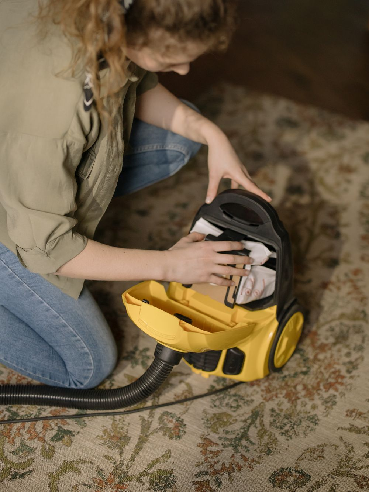

Stain & Odour Removal
Targeted treatment for stubborn stains and lingering smells

What's included
Wine, coffee, pet accidents, grease or mystery marks — some stains just won't budge with DIY methods. Our technicians use stain-specific, eco-friendly treatments and professional extraction to lift what's left behind and neutralise odours at the source.
Stain identification
Different stains need different chemistry — we identify the type to choose the right treatment.
Targeted pre-treatment
Specialist eco solutions break the bond between the stain and the fibre.
Agitation & dwell
We work the solution in and allow it to lift the stain without damaging the fabric.
Extraction & rinse
Hot-water extraction flushes the stain and residue away for a clean finish.
Frequently asked questions
Can every stain be removed?
Do you treat pet odours?
Is it safe for my kids and pets?
Book your stain & odour removal
Free quotes · fully insured · non-toxic & pet-safe.
Other services
Carpet Cleaning
Hot-water extraction steam cleaning that lifts deep dirt, allergens & traffic lanes.
Learn moreUpholstery Cleaning
Sofas, armchairs & dining chairs refreshed with fabric-safe steam and rapid drying.
Learn moreRug Cleaning
Wool, silk & synthetic rugs gently restored — colours revived, fibres protected.
Learn more